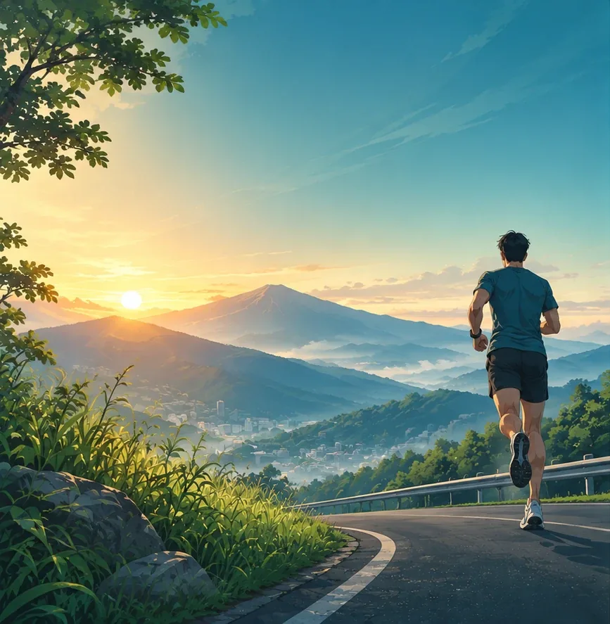
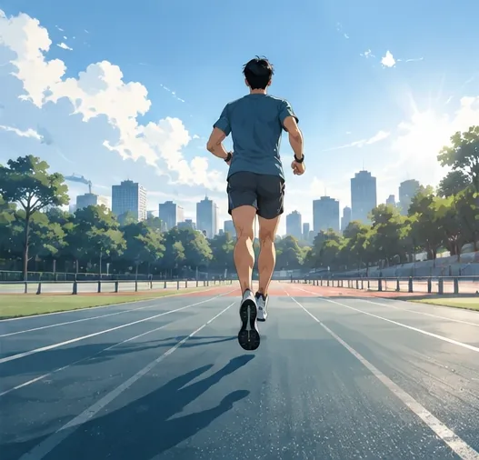
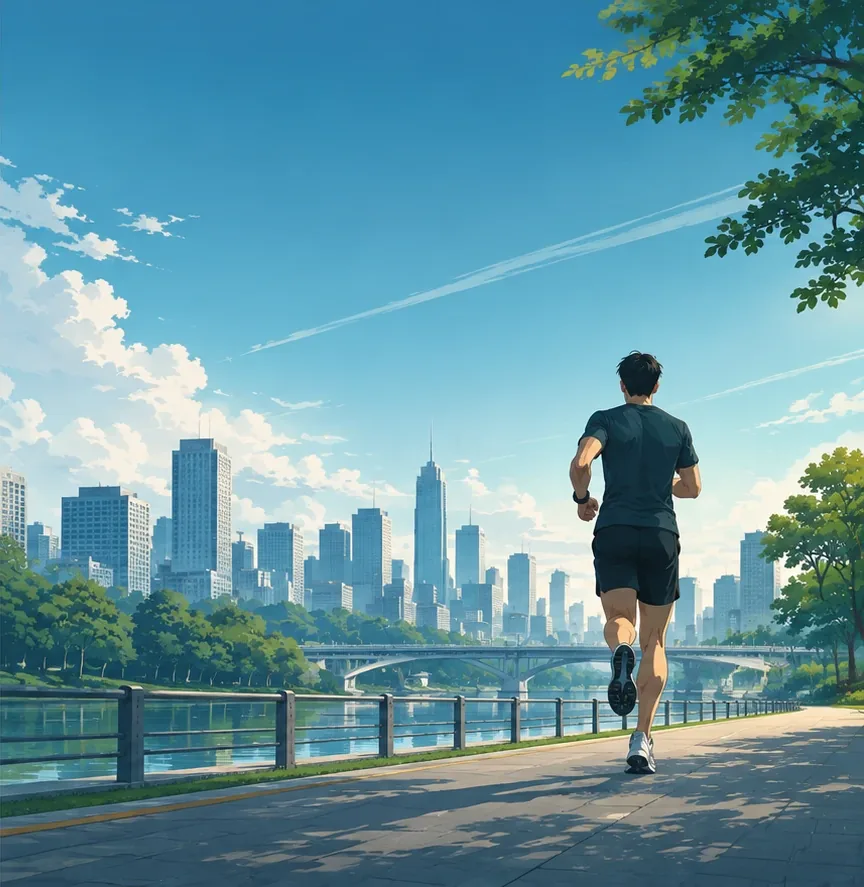
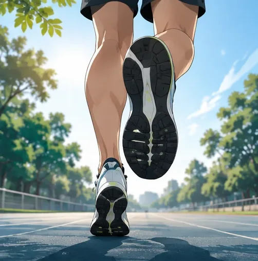
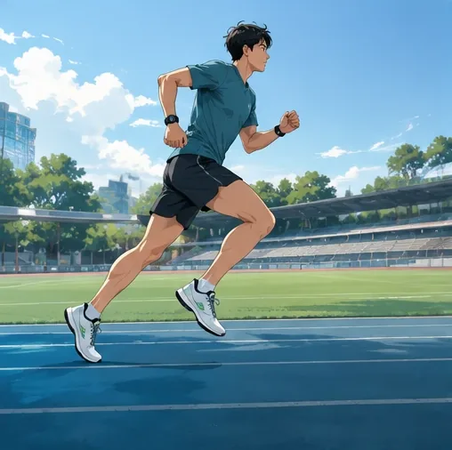
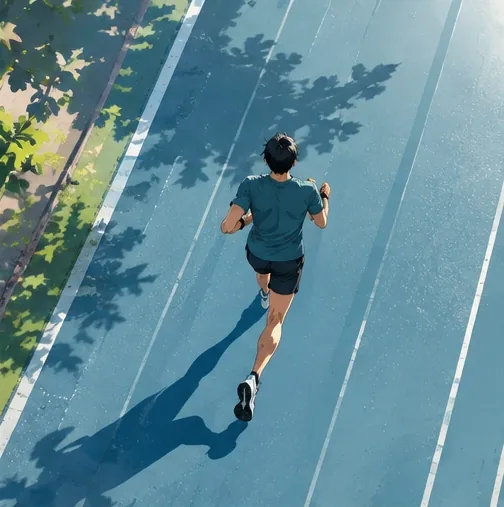
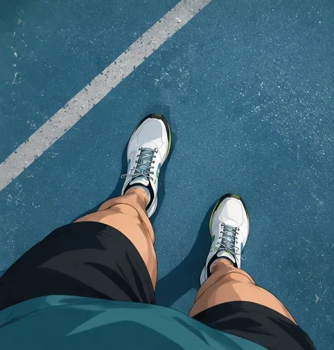

0 Splash in-app road-sunrise-f

9:41●●● ▮
run coach
Menyiapkan plan kamu…
Muncul setelah splash native (ikon). Sumber 866 px: buram di layar penuh, perlu versi resolusi tinggi

Plan harian untuk 5K sampai maraton. Semua data tetap di perangkatmu.
Masuk untuk memulihkan plan dari file backup di HP ini.

TEMPO


Selesaikan latihan pertama atau catat lari manual. Grafik volume dan pace muncul di sini.
Format WebP q82. Ukuran asli tidak diubah. Status draft: lisensi sumber belum diverifikasi.
road-sunrise-f866x887. Splash, onboarding, long run
track-side508x506. Kartu interval
track-overhead504x507. Kartu drill, ringkasan minggu 2.5track-aerial508x507. Empty state, hari istirahat
pov-feet482x506. Catat lari manual 2.6, pemanasan| Jenis latihan | Gambar kartu 2.1 | Catatan | |
|---|---|---|---|
| Easy | riverside-city-f / -m | Bergantian f/m per hari | |
| Tempo | track-back | ||
| Interval | track-side | ||
| Long run | road-sunrise-f / -m | ||
| Drill | track-overhead | ||
| Istirahat | track-aerial | | |
| Strength | (belum ada) | Perlu gambar baru, gaya sama |